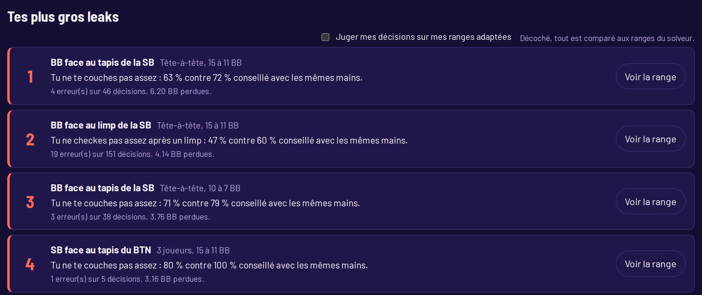
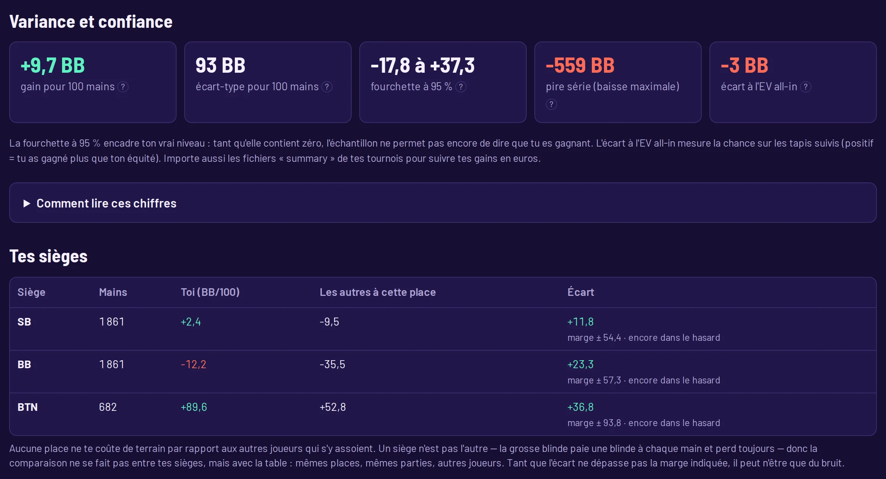
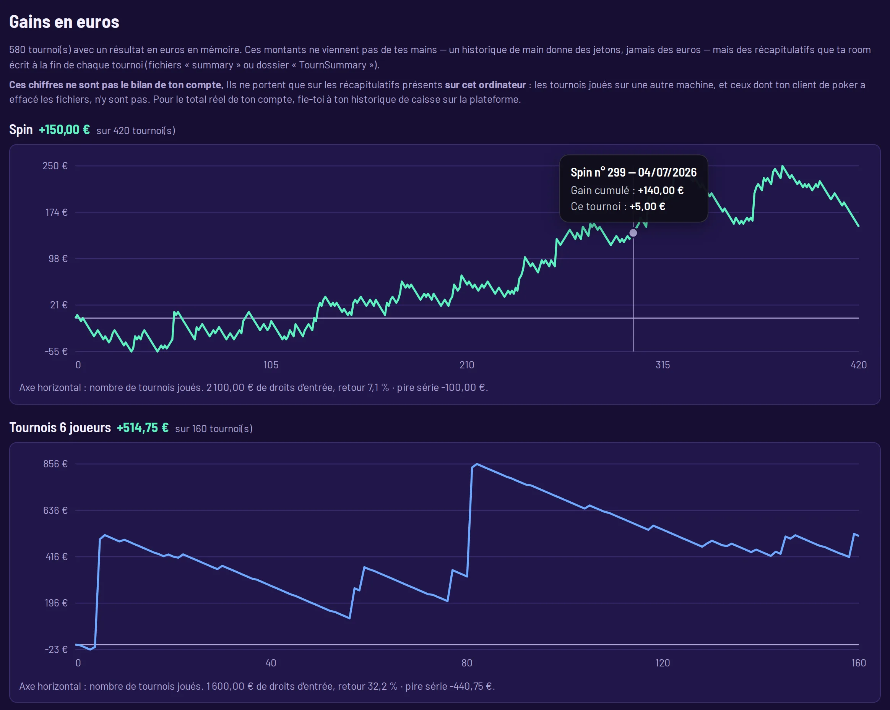
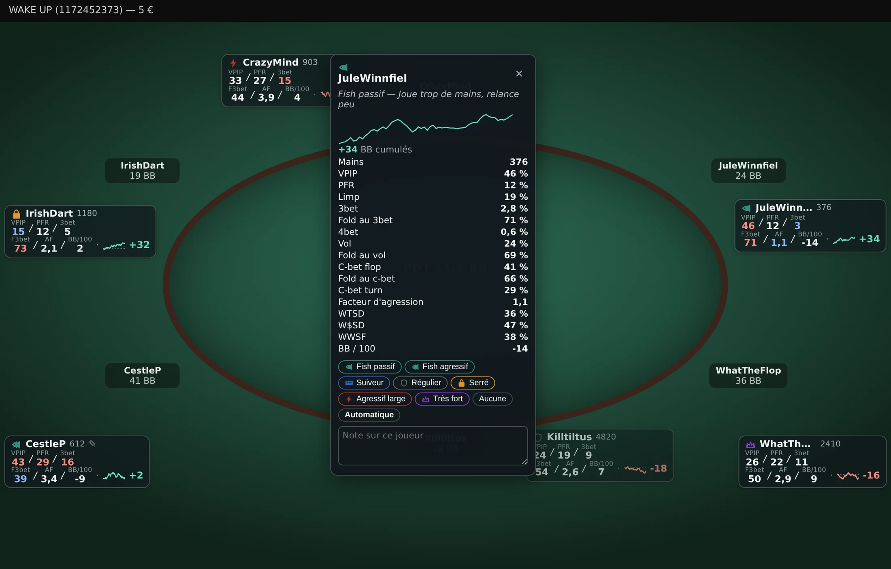
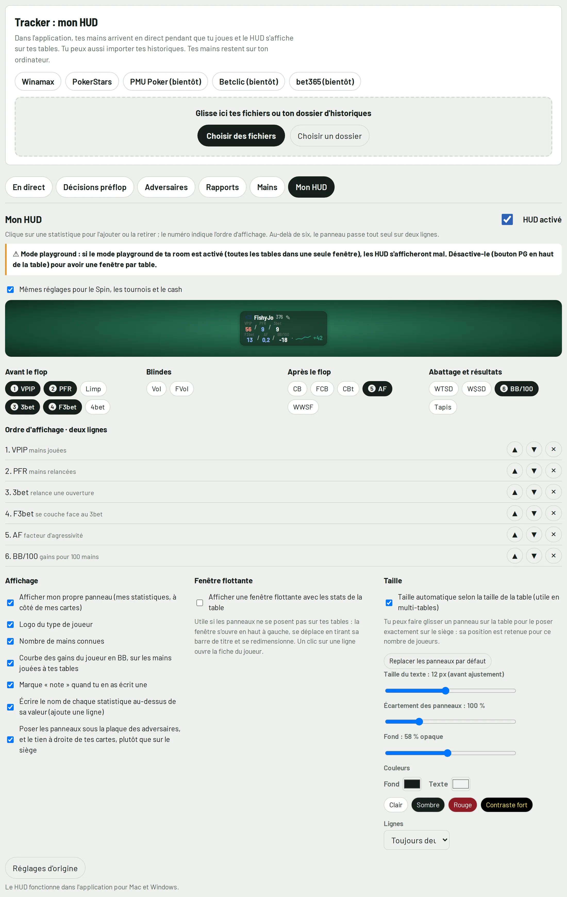
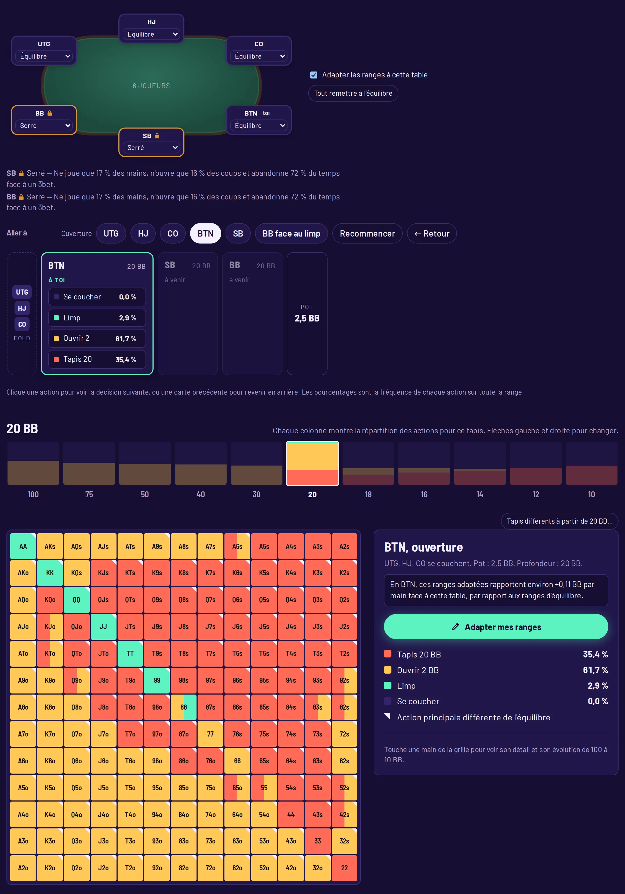
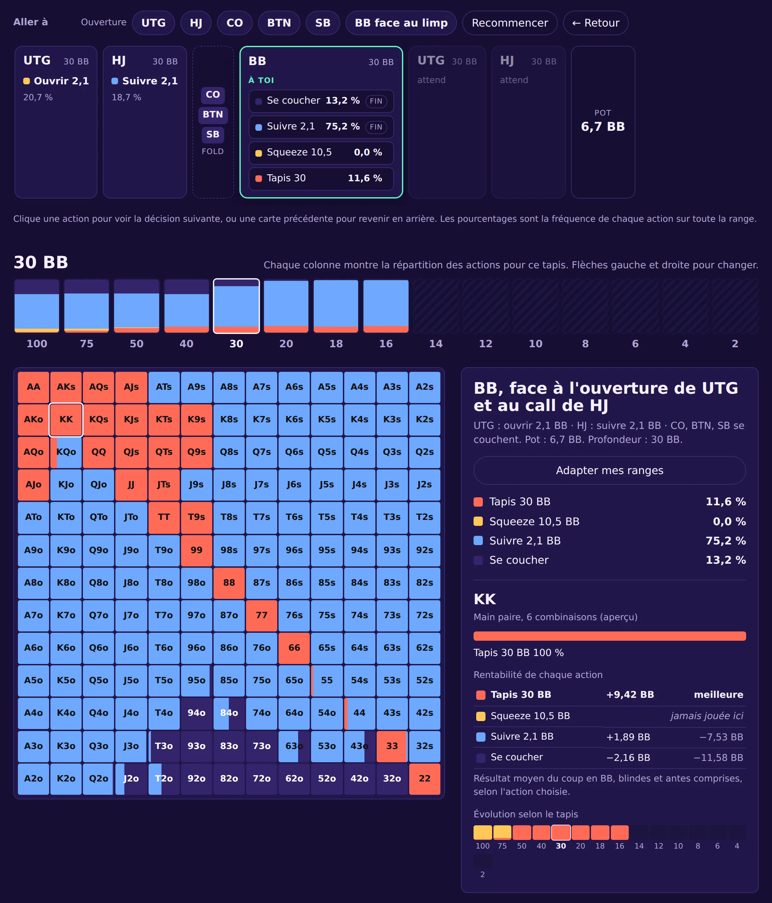
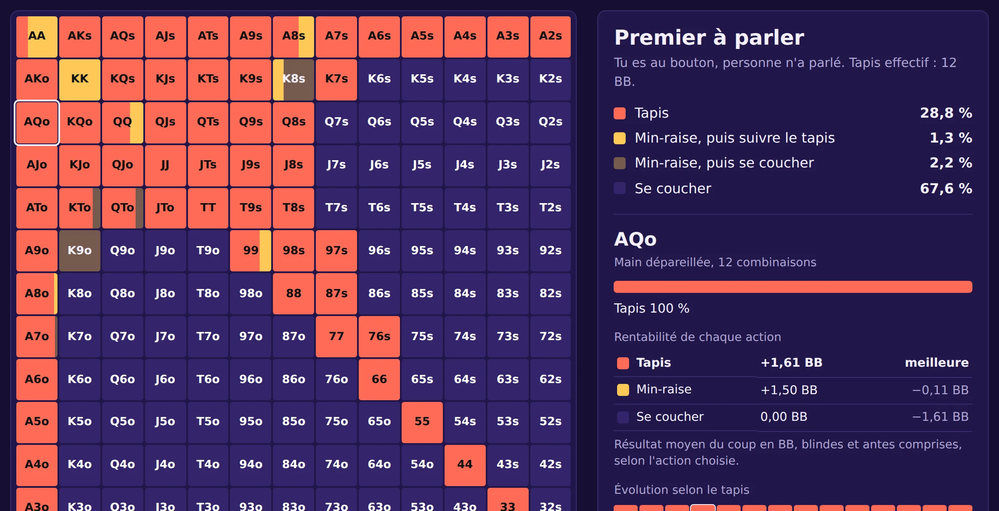
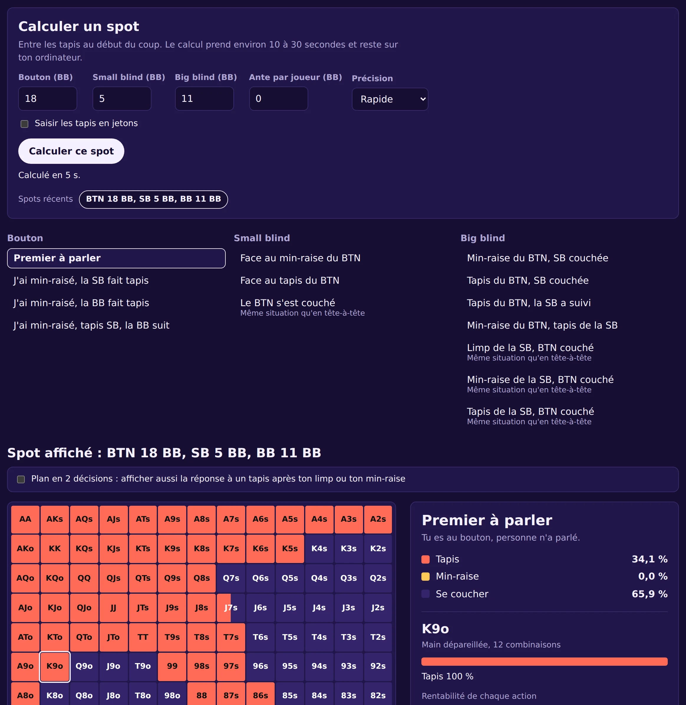

Spin complet
Aucune situation de Spin ne te prend au dépourvu. Les 14 tapis de 15 à 2 BB, à trois et en tête-à-tête, chaque option chiffrée en blindes, et le gros jackpot calculé en ICM et en euros de ton buy-in.
solveur préflop · track. solve. improve.
Solve It Poker calcule la bonne décision préflop pour chacune des 169 mains, du Spin au tournoi à 6 joueurs. Puis il lit tes vraies mains, compare chaque décision à ce calcul, et te donne le montant : tant de blindes perdues, sur telle situation, à telle place.
Le solveur dit ce qu'il fallait faire. Le tracker mesure ce que tu as fait, avec exactement les mêmes chiffres. L'entraînement te refait jouer tes erreurs jusqu'à ce qu'elles partent. C'est la même référence du début à la fin — c'est ce qui rend le montant d'un leak crédible.
Aucune situation de Spin ne te prend au dépourvu. Les 14 tapis de 15 à 2 BB, à trois et en tête-à-tête, chaque option chiffrée en blindes, et le gros jackpot calculé en ICM et en euros de ton buy-in.
Rejoue le coup comme à la table : clique l'action de chaque joueur avant toi, et lis ta stratégie. De 100 à 10 BB avec ante, ouvertures, limps, calls, squeezes, 3bet à 5bet, l'ICM de la bulle et de la table finale, et tes tapis réels si tu les saisis.
À ta table, personne ne joue l'équilibre. Assieds chaque adversaire à sa place — huit types calibrés sur de vraies statistiques, ou un joueur de ta base en un clic — et les ranges se recalculent pour cette table-là. Un serré en grosse blinde ne change pas ton jeu comme le même serré sous le pistolet.
Tu as ton propre plan sur certains spots ? Enregistre-le. Le tracker juge alors tes décisions sur tes ranges, et plus sur celles du solveur — mais il continue de chiffrer la perte avec les siennes, pour que le compte reste honnête.
Tu vois ta session se construire main après main. L'application trouve seule tes dossiers d'historiques, affiche le résultat en jetons, en blindes ou en euros, et te prévient quand la séance part de travers.
Tu choisis ce que tu veux voir sur chaque adversaire, et rien d'autre. Dix-sept statistiques, l'ordre, une ou deux lignes, la taille, les couleurs, la transparence — et au clic, sa fiche complète avec sa courbe, son type et tes notes.
Combien tu as réellement gagné, en euros, pas en blindes théoriques. Deux courbes séparées, Spin et tournois, lues dans les récapitulatifs de tes tournois — la souris sur la courbe donne le tournoi, sa date et son résultat.
Tu finis par connaître les réguliers de tes tables. Chaque adversaire a sa fiche, sa courbe et son type, et tu peux classer toute ta base sur n'importe quelle statistique pour repérer ceux qu'il faut éviter — et ceux qu'il faut chercher.
La question à laquelle personne ne répond : où part l'argent ? Chaque décision préflop est comparée au calcul, et tes fuites sont classées par ce qu'elles te coûtent vraiment, en blindes. Tu travailles la première de la liste, pas celle qui t'agace.
Tu perds peut-être à une seule place. Ton gain à chaque siège est comparé à celui des autres joueurs assis au même siège dans tes parties, avec la marge du hasard — pour savoir si c'est un vrai trou ou du bruit.
Mauvaise passe ou mauvais jeu ? Tes gains réels et ton EV tous-tapis sur le même graphique, avec l'écart-type, la fourchette de confiance et ta pire série. Chaque chiffre a son explication au clic : aucun n'est là pour faire sérieux.
Dix mains par jour, gratuites, sans carte bancaire. Pas des situations au hasard : celles que tu as ratées la veille, sur une vraie table, avec la correction expliquée. Illimité avec Improve.
Tout est calculé sur ton ordinateur : tes historiques ne sont jamais envoyés. Interface en français, anglais, espagnol et italien.
Captures de l'application, avec des mains de démonstration.
Le tracker repère chaque situation, compare ton choix à celui du solveur avec les mêmes mains, et te dit où tu perds le plus. « Voir la range » ouvre la bonne grille.
Une case suffit pour juger tes décisions sur tes propres ranges plutôt que sur celles du solveur.

Un siège n'est pas l'autre : la grosse blinde perd toujours. Solve It Poker compare donc ton gain à chaque place à celui des autres joueurs assis à la même place, dans tes parties, et te dit si l'écart dépasse la marge du hasard.

Pour chaque main : tes décisions, tes erreurs, les BB perdues, le coût pour 100 décisions et la situation où ça se joue.

Une courbe par jeu, tournoi après tournoi. Au survol : le numéro du tournoi, sa date, son résultat et le cumul.
Les montants viennent des récapitulatifs de fin de tournoi présents sur ton ordinateur : ce n'est pas le bilan de ton compte.

Gains réels, EV ajustée des tapis, gains avec et sans abattage : tu vois si tu gagnes grâce à tes décisions ou malgré elles.

Les statistiques de chaque adversaire sous son pseudo, son type en un logo, sa courbe de gains, et sa fiche complète au clic : toutes ses statistiques, son étiquette que tu poses toi-même, et tes notes.
Tu choisis quelles statistiques apparaissent et dans quel ordre, une ou deux lignes, les libellés, la taille, les couleurs et la transparence — pour le Spin et les tournois ensemble ou séparément.

Dix-sept statistiques au choix, l'ordre d'affichage, l'aperçu en direct du panneau tel qu'il sera sur la table, et tous les réglages d'affichage au même endroit.

Assieds un type de joueur à chaque place de la table : les ranges sont recalculées pour cette table précise, les mains dont l'action change sont signalées, et le gain espéré s'affiche.
Ici, au bouton à 20 BB, avec deux joueurs serrés en petite et grosse blinde : le bouton ouvre toutes ses mains.

Toutes tes grilles au même endroit, profondeur par profondeur. Celles que tu as modifiées sont encadrées en vert ; les autres montrent celle du solveur. Un clic ouvre la situation pour la retoucher.

Clique l'action de chaque joueur, comme sur une vraie table : ouverture, call, squeeze, limp, 3bet, 4bet, tapis. Chaque option affiche sa taille et sa fréquence.

En Spin, chaque case se découpe : tapis, min-raise puis suivre, min-raise puis se coucher. Tu sais d'avance quoi faire si on te relance à tapis.

18 BB au bouton, 5 en small blind, 11 en big blind ? Saisis les tapis, lance le calcul, lis la stratégie complète.

Un solveur qui ne dit pas comment il calcule demande de le croire sur parole. Voici la méthode, et ce qu'elle ne sait pas faire.
Aucune formule ne se renouvelle sans que tu l'aies voulu, et la résiliation se fait en ligne en trois clics, sans écrire à personne.
Une formule, le Spin et les tournois compris
Solve
Le plus complet
Improve
Track
Prix TTC. Chaque formule couvre le Spin et les tournois. Tu peux changer de formule à tout moment depuis ton espace client. Résiliation en ligne en trois clics : . macOS 12 ou plus récent (puce Apple ou Intel), Windows 10 ou 11 en 64 bits. Réservé aux personnes majeures.
Le solveur, non : il est interdit pendant le jeu, et Solve It Poker le verrouille automatiquement dès qu'une table est ouverte, jusqu'à deux minutes après ta dernière main. Le tracker et le HUD dépendent du règlement de ta room : certaines autorisent les logiciels qui enregistrent tes statistiques et celles que tu as recueillies sur tes adversaires, d'autres tiennent une liste de logiciels autorisés. Tant que Solve It Poker n'y figure pas, n'utilise pas son HUD à leurs tables — l'import de tes historiques après la session reste possible.
Solve pour étudier les ranges, Track pour analyser tes mains et utiliser le HUD, ou Improve pour tout avoir, avec l'accès direct à la bonne range depuis chaque erreur. Chaque formule couvre le Spin et les tournois.
Oui, à tout moment, depuis ton espace client. La différence est calculée au prorata sur ta prochaine échéance.
Sur Mac avec macOS 12 (Monterey) ou plus récent, à puce Apple ou Intel, et sur PC Windows 10 ou 11 en 64 bits.
Winamax et PokerStars (historiques en anglais pour PokerStars), avec le suivi en direct et les gains en euros tirés des récapitulatifs de tournoi. PMU Poker, Betclic et bet365 sont prévus. Les rooms n'offrent pas de connexion directe aux outils tiers : Solve It Poker lit les fichiers que ton logiciel de poker enregistre.
Pas forcément. Ils sont lus dans les récapitulatifs de fin de tournoi présents sur ton ordinateur : les tournois joués sur une autre machine, et ceux dont ton logiciel de poker a effacé les fichiers, n'y figurent pas. Le bilan exact de ton compte, c'est l'historique de caisse de ta room.
Chaque profil reproduit les statistiques d'un type de joueur. Sur la petite table du solveur, tu choisis le profil de chaque place : le solveur calcule la meilleure réponse à cette table précise, les places laissées sur « Équilibre » jouant les ranges de référence. Depuis la fiche d'un adversaire du tracker, « L'asseoir à la table du solveur » place ses statistiques réelles au siège que tu choisis.
Non pour les calculs : toutes les grilles et toutes les analyses se font sur ton ordinateur, sans envoi de tes mains. La connexion sert seulement à vérifier ton abonnement de temps en temps.
Non : une décision dépend des tapis, des blindes et de la répartition des gains. Le buy-in et le multiplicateur servent à afficher la rentabilité en euros en mode jackpot. Les habitudes des adversaires, elles, varient selon les limites : c'est le rôle des profils.
Le Spin (3 joueurs et tête-à-tête, jusqu'à 15 BB : Expresso chez Winamax, Spin & Go chez PokerStars) et les tournois aux tables de 6 joueurs (de 100 à 2 BB). Il juge tes décisions préflop ; après le flop, il trace tes gains et ton EV mais ne juge pas encore tes décisions.
Non. Les historiques sont lus et gardés sur ton ordinateur. Tu peux les effacer à tout moment depuis le tracker.
Tu as accès à toute la formule choisie pendant 7 jours. Sans résiliation avant la fin de l'essai, l'abonnement démarre automatiquement.
En trois clics : « Résilier votre contrat » (en haut et en bas de chaque page), tu indiques ton nom et ton e-mail, puis tu confirmes. Tu reçois un accusé de réception par e-mail avec la date de fin, et tu gardes l'accès jusqu'à la fin de la période payée.
Non. Solve It Poker est un logiciel d'analyse : il calcule des grilles de décision et relit les historiques de mains déjà présents sur ton ordinateur. Il n'organise aucune partie, n'accepte aucune mise, ne détient aucun fonds et ne se connecte à aucun site de poker. Pour jouer, tu utilises ton logiciel de poker habituel, séparément.
Non. Solve It Poker est un logiciel indépendant, ni affilié à Winamax ni à PokerStars, ni approuvé par eux.